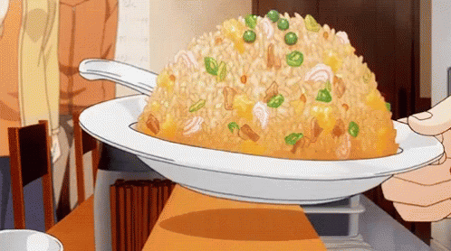

Fried Rice Recipe

Description
Fried Rice Fried rice is a versatile and delicious dish that
originated in Chinese cuisine. It typically consists of cooked rice stir-fried with
various ingredients such as vegetables, meat, and sauces, resulting in a flavorful and satisfying meal.
Ingredients
Here are the main ingredients used in this dish:
- Cooked rice (preferably day-old rice)
- Vegetables (such as diced carrots, peas, and chopped onions)
- Eggs
- Soy Sauce
- Oil for stir-frying
- Salt and Pepper to taste
Steps
Here are the steps to create the perfect dish:
- Heat oil in a large pan or wok over medium heat.
- Add diced onions and cook until they become translucent.
- Add the protein of your choice and cook until it's no longer pink and cooked through.
- Push the cooked onions and protein to one side of the pan, creating space for the eggs.
- Crack the eggs into the pan and scramble them until they're cooked.
- Add the diced carrots and any other vegetables you're using, and stir-fry for a few minutes until they're tender.
- Add the cooked rice to the pan, breaking up any clumps, and stir-fry everything together.
- Season with soy sauce, salt, and pepper, adjusting the quantities to your taste.
- Add minced garlic, grated ginger, or chopped green onions for added flavor (optional)
- Stir-fry for a few more minutes until everything is well combined and heated through.
Serve hot and enjoy your homemade fried rice!
